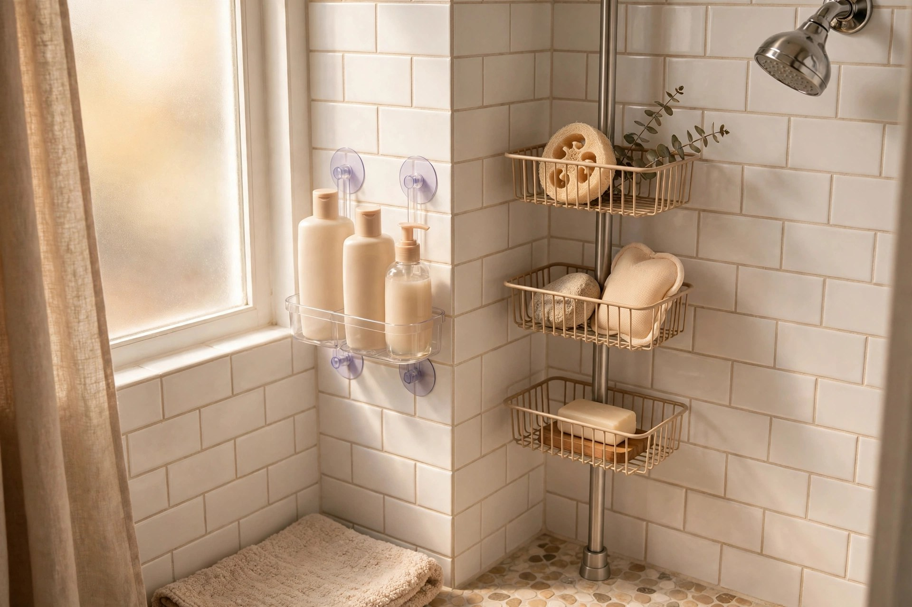

Small Bathroom Storage
Small Bathroom Shower Storage Ideas for Renters
Intro
Shower storage is the hardest part of a rented bathroom, because you cannot drill into the tiles. Shampoo bottles end up on the floor of the shower, soap slides off the ledge, and the whole shower looks cluttered before you even start.
This guide has 12 renter-friendly shower storage ideas. Each one lists what it costs, and none of them needs drilling — suction cups, tension poles and hanging baskets do the job. All come off without a mark when you move out.

1. A suction-cup caddy on the wall — $8–$12
A suction-cup caddy sticks to smooth tiles and holds shampoo, conditioner and body wash at hand height. Press the cups firmly onto clean, dry tiles and leave them for a day before loading. Good suction cups hold 5 kg — more than enough for three bottles. Wipe the tiles dry before sticking the cups, or they will slide off in the steam.
2. A tension pole in the shower corner — $15–$25
A tension pole wedges between the floor and the ceiling in the shower corner, with baskets at different heights. It needs no fixing at all, and the baskets hold everything. Choose a pole with rubber ends, so it grips without marking the tiles.
3. A hanging basket over the shower head — $6–$10
A wire basket that hangs over the shower head or the shower rail holds shampoo and soap right where you use them. It costs a few dollars, takes seconds to hang, and moves with you when you move out. Choose stainless steel, so it does not rust.
4. A suction soap dish that drains — $4–$7
A suction soap dish with drainage holes keeps soap dry and stops it sliding off the ledge. Stick it at hand height, next to the caddy. Dry soap lasts twice as long as soap sitting in a puddle.
5. A mesh bag for the kids' toys — $5–$8
A mesh bag with suction cups holds bath toys, lets them drain, and keeps them off the shower floor. Hang it low enough for children to reach, and the toys dry between baths. Mesh dries faster than any solid bag.
6. A shower shelf that hangs from the rail — $8–$12
A two-tier shelf that hangs from the shower curtain rail holds bottles above the bath, away from the water. It works in any shower with a rail, needs no fixing, and lifts off in seconds for cleaning. Keep heavy bottles on the lower tier.
7. A corner shelf with adhesive strips — $7–$12
A triangular corner shelf, fixed with waterproof adhesive strips, uses the dead corner of the shower. Two shelves, one above the other, hold everything a shower needs. Press the strips firmly and wait a day before loading.
8. A caddy on the shower door — $10–$15
A caddy that hooks over the top of a glass shower door holds bottles on the outside, where they stay dry. It suits showers with a glass door or screen, and it needs no fixing at all. Keep the caddy light, so the door still slides easily.
9. A small stool inside the shower — $12–$18
A small waterproof stool inside the shower holds shampoo at sitting height and works as a seat for shaving legs. It costs less than a shelf unit and moves wherever you need it. Choose a stool with drainage holes, so water does not pool.
10. A pump bottle that sticks to the wall — $6–$10
Refillable pump bottles with suction mounts stick to the shower wall and hold shampoo, conditioner and body wash. They replace three loose bottles with three neat pumps, and they refill from a big bottle that lives outside the shower.
11. A basket under the sink for shower spares — $8–$12
A basket under the sink holds spare bottles — the next shampoo, the next soap — so the shower itself holds only what you use today. When a bottle runs out, the spare is one step away. This one habit halves the clutter in the shower.
12. One bottle in, one bottle out — $0
The cheapest idea costs nothing. Keep only the bottles you use this week in the shower. When a new bottle goes in, the empty one comes out. In a small shower, this rule makes the biggest difference of all.
Conclusion
A rented shower does not need holes in the tiles — it needs suction, tension and hooks. A suction caddy, a tension pole and a hanging basket can hold everything a shower needs for under $40, and all of it comes off without a mark when you move out. Start with one caddy at hand height, and the shower floor will stay clear.
Budget recap
- Suction-cup caddy + soap dish: ~$15 - Tension pole with baskets: ~$20 - Hanging basket + pump bottles: ~$15
Total for a complete shower setup: ~$50 — or ~$15 if you start with a caddy and a soap dish.
Pinterest pin titles
- ""Small Bathroom Shower Storage Ideas for Renters""
- ""Renter's Shower: 12 Storage Ideas — No Drilling""
- ""12 Shower Caddies That Stick, Hang and Hold Everything""